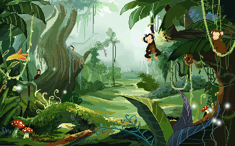
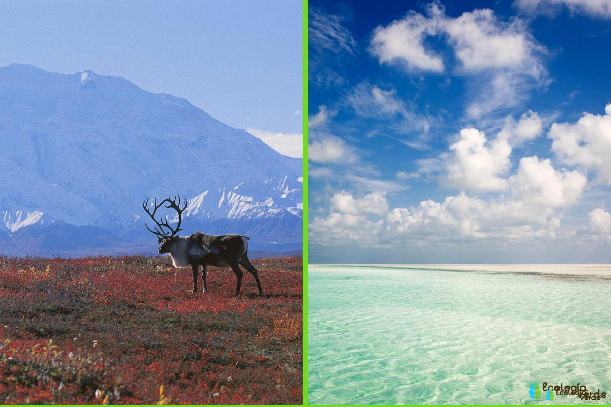

¿Qué es la biodiversidad?
La biodiversidad es la variabilidad de organismos vivos de cualquier clase, incluidos en cualquier tipo de
ecosistemas. Comprende la diversidad dentro de cada especie, entre las especies y entre los ecosistemas.
Pero no se refiere a la cantidad de individuos de cada una de esas especies.
Tipos de Biodiversidad
Podemos diferencias los tipos de biomas del mundo teniendo en cuenta una serie de factores que los determinan. Dichos factores son:

*El tipo de vegetación
*El nivel de precipitación y humedad
*Los gradientes de temperatura según la altitud y latitud
*El tipo de estructura de la comunidad
*La forma de crecimiento de sus especies